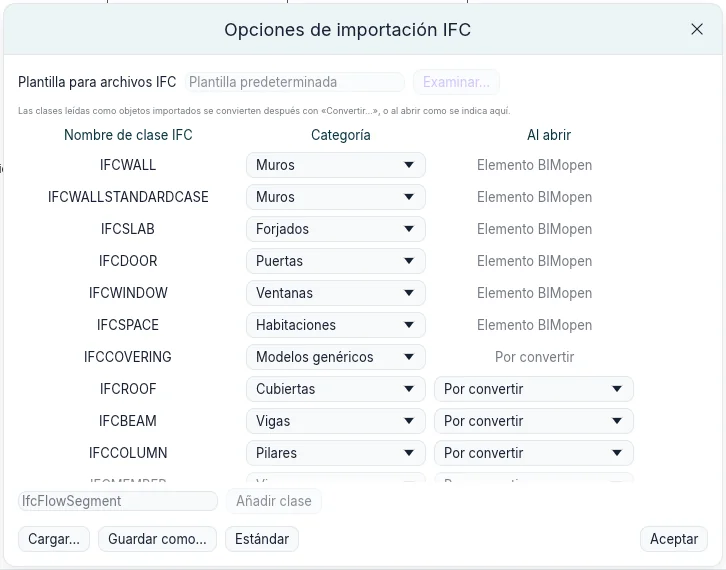
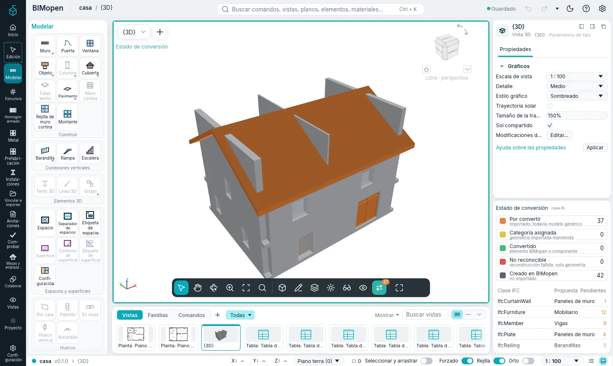
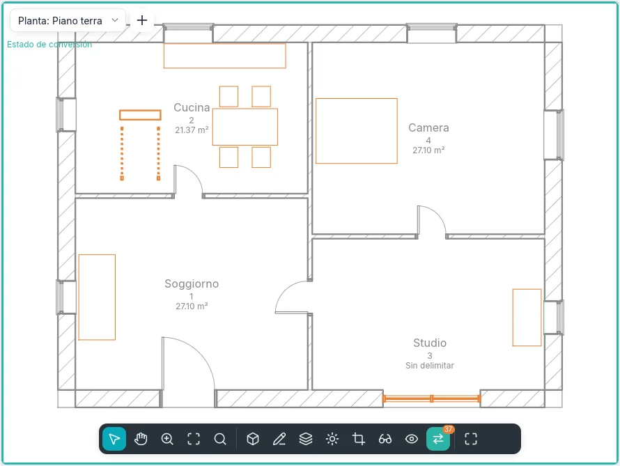
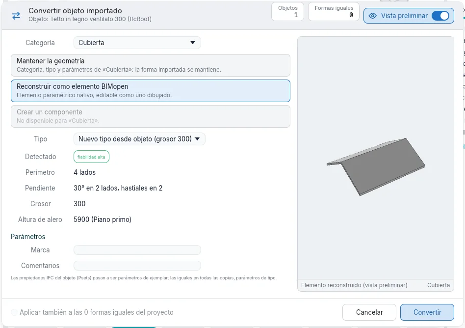
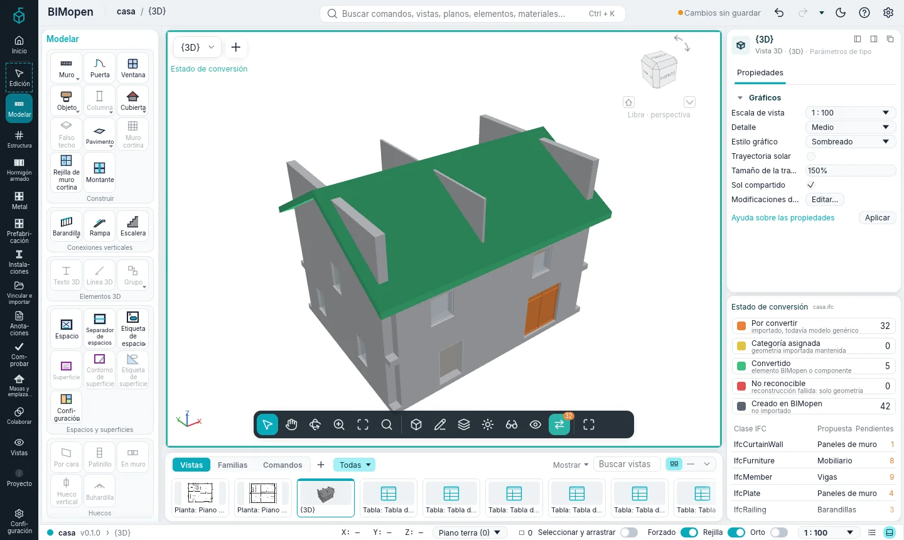
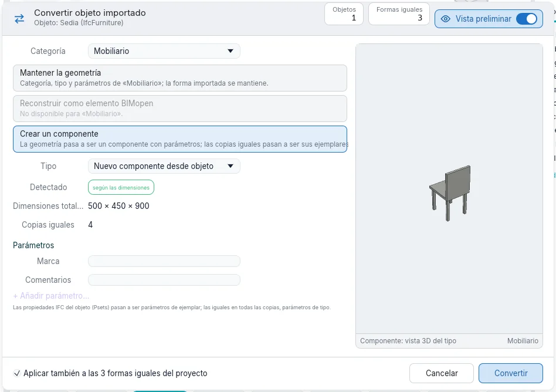
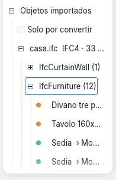

Importación y conversión
Un modelo hecho con otro programa llega como archivo IFC. BIMopen lee sus muros, suelos, puertas, ventanas y espacios como elementos propios. Todo lo demás que tiene forma (cubiertas, vigas, pilares, escaleras, barandillas, muros cortina, mobiliario, aparatos sanitarios) queda como objeto importado: su geometría tal como se leyó, como modelo genérico. Convertir hace luego de cada objeto importado un elemento BIMopen de cualquier categoría, cuando y cuanto haga falta.
Abrir un archivo IFC
- Abra el menú de la aplicación (la marca de BIMopen en lo alto de la barra lateral) y elija Abrir ➤ IFC….
- Elija un archivo IFC2x3 o IFC4.
BIMopen crea un proyecto nuevo: las plantas pasan a ser niveles, los muros se reconstruyen a partir de su eje, las losas pasan a ser suelos, las puertas y ventanas van en los muros que cortan sus huecos, los espacios pasan a ser habitaciones. Cualquier otro objeto con forma pasa a ser un objeto importado. Cada uno recuerda:
- el archivo del que viene y su formato (
casa.ifc · IFC4); - su clase IFC (
IfcRoof,IfcFurniture…) y su identificador; - el objeto del que forma parte: los tramos de una escalera, los paneles de un muro cortina;
- sus conjuntos de propiedades y cantidades, en Propiedades bajo Propiedades IFC.
Los mensajes cuentan lo que se leyó, lo que se aproximó y lo que quedó fuera.
Opciones de importación IFC
Coordinar ▸ Opciones IFC… abre Opciones de importación IFC: en qué se convierte cada clase IFC al abrir un archivo.

- Muros, losas, puertas, ventanas y espacios se leen como Elemento BIMopen; cada uno puede leerse en cambio como objeto importado (Modelos genéricos) o quedar fuera (No importado).
- Las demás clases se leen como objetos importados. Categoría es la categoría propuesta para cada clase al convertirla: cualquier categoría de BIMopen.
- Al abrir dice qué les ocurre al abrir el archivo: Por convertir las deja para después; Mantener la geometría, Reconstruir como elemento BIMopen o Crear un componente las convierte enseguida (véase abajo).
- Añadir clase añade una clase que la lista no tiene.
- Cargar… lee un archivo de asignación de clases, Guardar como… escribe uno: un archivo de texto, una clase por línea. Estándar vuelve a la asignación predeterminada.
Las opciones se conservan de una sesión a otra.
Estado de conversión
Mientras el proyecto contiene objetos importados por convertir, la barra de la vista muestra Estado de conversión, con su número. La información sobre herramientas dice cuántos son y en cuántas clases IFC.
Haga clic: la vista muestra cada objeto en el color de su estado, dentro de un marco verde azulado.
| Color | Estado | Significado |
|---|---|---|
| Naranja | Por convertir | importado, todavía modelo genérico |
| Amarillo | Categoría asignada | geometría importada mantenida, con una categoría |
| Verde | Convertido | elemento BIMopen o ejemplar de componente |
| Rojo | No reconocible | la reconstrucción no reconoció la forma: solo geometría |
| Gris | Creado en BIMopen | no importado |

Funciona en plantas, secciones, alzados y vistas 3D, y solo cambia la ventana: el modelo y las demás vistas quedan como están. Mientras está activado solo se pueden seleccionar objetos importados.

El panel Estado de conversión, bajo Propiedades, contiene:
- la leyenda con el número de cada estado: un clic en un estado lo oculta en la vista, o lo vuelve a mostrar;
- las clases IFC con objetos por convertir, la categoría propuesta para cada una y cuántos quedan. Un clic en una clase selecciona sus objetos por convertir y abre Convertir….
Cuando no queda nada por convertir, el panel lo dice. Desactive Estado de conversión y su botón sale de la barra de la vista.
En el estilo Clásica el panel es una pestaña junto a Propiedades; en el modo táctil es una hoja, abierta desde los ajustes de la vista.
Convertir un objeto importado
Seleccione uno o varios objetos importados: se abre la tarjeta contextual Edición | Objetos importados. Convertir… abre Convertir objeto importado.

- Categoría: en qué se convierte el objeto. La propuesta de la clase aparece primero.
- Uno de los tres modos (abajo). Un modo que no vale para la categoría aparece en gris.
- Tipo: uno de los tipos de la categoría, o un tipo nuevo hecho desde el objeto.
- Detectado: lo que BIMopen lee en la forma y con qué fiabilidad.
- Parámetros: Marca y Comentarios, y las propiedades IFC del objeto.
- Convertir.
La vista preliminar muestra en qué se convertirá el objeto. El interruptor Vista preliminar del encabezado la oculta; el diálogo mantiene su tamaño.
Los tres modos
| Modo | Categorías | Qué ocurre |
|---|---|---|
| Mantener la geometría | todas | El objeto toma la categoría, un tipo y parámetros. Cuenta en tablas de planificación, filtros, visibilidad y exportación IFC como elemento de esa categoría; su forma sigue siendo la importada. Se desplaza, gira y refleja. |
| Reconstruir como elemento BIMopen | muros, suelos, cubiertas, puertas, ventanas | BIMopen lee la forma y crea el elemento nativo, editable como uno dibujado: eje, grosor y altura de un muro; contorno, grosor y cota superior de un suelo; contorno, pendientes, grosor y altura de alero de una cubierta; una puerta o ventana en el muro donde está, con su anchura, altura y antepecho. |
| Crear un componente | mobiliario, aparatos sanitarios, modelos genéricos, puertas, ventanas, pilares, vigas | La geometría pasa a ser un tipo de componente con Anchura, Profundidad y Altura según sus dimensiones totales; cambiarlas estira la forma. El objeto pasa a ser su ejemplar. |
Una forma que no puede reconstruirse como la categoría elegida se vuelve roja (No reconocible) y queda como estaba: conviértala de nuevo manteniendo su geometría. La reconstrucción de pilares, vigas, escaleras y barandillas llegará en una fase siguiente.
Categoría en Propiedades hace lo mismo que Mantener la geometría: elegir allí una categoría convierte enseguida el objeto seleccionado.

Componentes a partir de objetos importados
Crear componente en la tarjeta contextual abre el diálogo con Crear un componente elegido.

Las propiedades IFC iguales en todas las copias pasan a ser parámetros de tipo; las distintas quedan en cada ejemplar. El componente aparece en el Índice del proyecto bajo Objetos importados, y sus Parámetros de tipo cambian todos los ejemplares a la vez.
Formas iguales
Las copias de una misma forma, desplazadas y giradas en planta, se reconocen como iguales. Seleccionar formas iguales las selecciona; en el diálogo, Aplicar también a las N formas iguales del proyecto las convierte juntas (activado por defecto al crear un componente). Como ejemplares de un solo componente ocupan menos memoria y se dibujan más rápido en modelos grandes.
Seleccionar objetos importados
- Seleccionar clase selecciona los objetos importados de la misma clase IFC.
- Una clase en el panel Estado de conversión, o Convertir todos (N)… sobre una clase en el Índice del proyecto, selecciona sus objetos por convertir y abre el diálogo.
- Un objeto que forma parte de otro (un tramo de una escalera) va con él: convertir el conjunto lleva consigo sus partes.
Los objetos importados en el Índice del proyecto
Objetos importados en el Índice del proyecto lista cada archivo leído, con su formato y cuántos objetos quedan por convertir; debajo, las clases IFC, bajo cada clase sus objetos, con el color de su estado y, una vez convertidos, la categoría en que se convirtieron. Los objetos hechos de partes listan sus partes debajo.

- Solo por convertir oculta lo que ya está convertido.
- Un clic en un objeto lo selecciona; un doble clic lo muestra en una vista.
- El botón derecho sobre una clase: Convertir todos (N)…, Seleccionar todos los por convertir (N), Restaurar originales (N).
- El botón derecho sobre un archivo: lo mismo, y Quitar referencias de origen….
- El botón derecho sobre un objeto: Convertir…, Seleccionar formas iguales, Mostrar en vista, Ocultar en vista, Restaurar original.
Restaurar los originales
Lo que una conversión sustituye se conserva en el proyecto, en el archivo .bimopen: el objeto
original, con las partes que llevó consigo. Restaurar original (en la tarjeta contextual, en el
Índice del proyecto o en el menú del botón derecho) lo devuelve tal como se importó, de nuevo
naranja.
Pregunta primero, y dice qué se perderá: los cambios hechos en elementos reconstruidos o componentes, y las puertas y ventanas alojadas en muros convertidos. Un componente creado por la conversión se va con su último ejemplar. Deshacer revierte una conversión o una restauración como cualquier otro cambio.
La geometría de los originales se guarda una sola vez por cada malla igual, así que conservarlos cuesta poco. Cuando las conversiones son definitivas, Quitar referencias de origen… sobre el archivo en el Índice del proyecto elimina los originales: después, Restaurar original ya no es posible.
Próximamente
- Actualizar desde archivo: volver a leer el archivo de origen y actualizar sus objetos.
- Herramientas por cara, para colocar muros, suelos y cubiertas sobre formas libres y curvas.
- La reconstrucción de pilares, vigas, escaleras y barandillas.
- La conversión de objetos de archivos OBJ y glTF con el mismo diálogo.